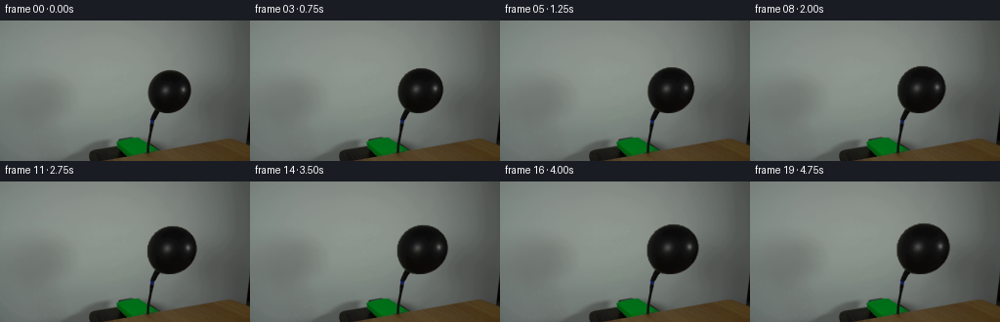
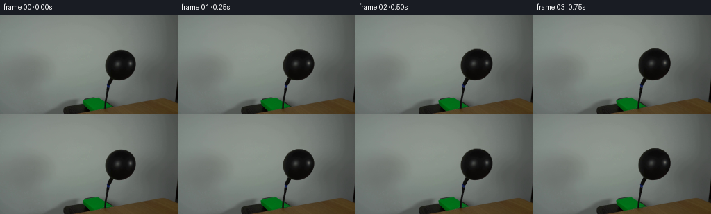

← 本轮 smoke 总览traex/DeepSeek-V4.1-Flash · 0037
text · 256×144 · 4.0 FPS · 20 帧 · 状态 complete · 输出 tokens 28775
原始任务Static locked-off single-shot with fixed frame throughout filmed with constant framerate in real-time. The scene shows a realistic scientific demonstration. The scene only contains the described setup and actions. The balloon is attached to a black hose that points upwards from behind a wooden table. Air is being pumped into the black balloon.
当前保存结果
已保存候选与代码修改
这里按时间展示外部捕获的候选，每份均可单独播放。保存新版本不等于完成视觉检查；下方工具证据记录实际看过的图。
候选 01 · 2026-11-08T23:24:17.903105+00:00 · 点开播放与检查图
inspection.png

transition_check.png

代码变化
--- 上一保存版本
+++ 本次保存版本
@@ -0,0 +1,110 @@
+from pathlib import Path
+
+import cv2
+import numpy as np
+from PIL import Image
+
+import artifact_io
+
+
+WIDTH = 256
+HEIGHT = 144
+FRAME_COUNT = 20
+FPS = 4
+
+
+def _balloon_mask(image):
+ """Return the photographed balloon body, with its dark texture filled."""
+ gray = cv2.cvtColor(image, cv2.COLOR_RGB2GRAY)
+ candidates = np.zeros_like(gray, dtype=np.uint8)
+ candidates[45:99, 140:205] = (gray[45:99, 140:205] < 90).astype(np.uint8)
+
+ count, labels, stats, _ = cv2.connectedComponentsWithStats(candidates, 8)
+ seed_label = int(labels[75, 175])
+ if seed_label == 0 or count <= 1:
+ raise RuntimeError("Could not isolate the balloon in first_frame.png")
+
+ component = (labels == seed_label).astype(np.uint8)
+ contours, _ = cv2.findContours(component, cv2.RETR_EXTERNAL, cv2.CHAIN_APPROX_NONE)
+ contour = max(contours, key=cv2.contourArea)
+ filled = np.zeros_like(component)
+ cv2.drawContours(filled, [contour], -1, 1, cv2.FILLED)
+
+ # The thin dark stem continues below the body. Keep it fixed and animate
+ # only the balloon above the knot.
+ filled[95:] = 0
+ filled = cv2.morphologyEx(
+ filled, cv2.MORPH_CLOSE, cv2.getStructuringElement(cv2.MORPH_ELLIPSE, (3, 3))
+ )
+ return filled.astype(np.float32)
+
+
+def _inflated_frame(base, body_mask, amount):
+ """Warp the photographed balloon surface about its neck."""
+ anchor_x = 158.5
+ anchor_y = 94.0
+
+ # The balloon tightens as it fills: most of the visible growth is early,
+ # followed by a small pump pulse. Width gains slightly more than height.
+ pressure = amount ** 0.72
+ pulse = 0.0025 * np.sin(2.0 * np.pi * (1.35 * amount - 0.15))
+ scale_x = 1.0 + 0.245 * pressure + pulse
+ scale_y = 1.0 + 0.185 * pressure + 0.7 * pulse
+
+ yy, xx = np.mgrid[0:HEIGHT, 0:WIDTH].astype(np.float32)
+ map_x = np.ascontiguousarray(anchor_x + (xx - anchor_x) / scale_x, dtype=np.float32)
+ map_y = np.ascontiguousarray(anchor_y + (yy - anchor_y) / scale_y, dtype=np.float32)
+
+ source_mask = cv2.remap(
+ body_mask,
+ map_x,
+ map_y,
+ interpolation=cv2.INTER_LINEAR,
+ borderMode=cv2.BORDER_CONSTANT,
+ borderValue=0,
+ )
+ alpha = cv2.GaussianBlur(source_mask, (0, 0), 0.42)
+ alpha = np.clip(alpha, 0.0, 1.0)
+
+ warped = cv2.remap(
+ base,
+ map_x,
+ map_y,
+ interpolation=cv2.INTER_CUBIC,
+ borderMode=cv2.BORDER_REPLICATE,
+ )
+
+ # A restrained tension shading keeps the enlarged surface from looking
+ # like a flat enlarged cutout. It is strongest toward the far edge.
+ local_x = (xx - anchor_x) / max(scale_x * 23.0, 1.0)
+ local_y = (yy - 69.0) / max(scale_y * 24.0, 1.0)
+ radial = np.sqrt(local_x * local_x + local_y * local_y)
+ tension_shade = np.clip((radial - 0.58) * 0.11, 0.0, 0.025)
+ warped = warped.astype(np.float32)
+ warped *= (1.0 - tension_shade[..., None] * amount)
+
+ frame = base.astype(np.float32)
+ frame = frame * (1.0 - alpha[..., None]) + warped * alpha[..., None]
+ return np.clip(np.rint(frame), 0, 255).astype(np.uint8)
+
+
+def generate():
+ case_dir = Path(__file__).resolve().parent
+ base = np.asarray(Image.open(case_dir / "first_frame.png").convert("RGB"), dtype=np.uint8)
+ if base.shape != (HEIGHT, WIDTH, 3):
+ raise ValueError(f"Expected a 256x144 RGB first frame, got {base.shape}")
+
+ body_mask = _balloon_mask(base)
+ frames = np.empty((FRAME_COUNT, HEIGHT, WIDTH, 3), dtype=np.uint8)
+ frames[0] = base
+
+ for index in range(1, FRAME_COUNT):
+ amount = index / (FRAME_COUNT - 1)
+ frames[index] = _inflated_frame(base, body_mask, amount)
+
+ artifact_io.save(frames, case_dir)
+ return frames
+
+
+if __name__ == "__main__":
+ generate()
可观测工具行为
命令 1 · 2026-11-08T23:20:07.986402+00:00/bin/bash -c "pwd && rg --files -g '"'!**/.git/**'"'"
exit 0 命令 2 · 2026-11-08T23:20:08.239973+00:00/bin/bash -c "sed -n '1,240p' prompt.txt"
exit 0 命令 3 · 2026-11-08T23:20:08.752313+00:00/bin/bash -c "sed -n '1,280p' GENERATION_RULES.md"
exit 0 命令 4 · 2026-11-08T23:20:18.754515+00:00/bin/bash -c "sed -n '1,260p' artifact_io.py"
exit 0 命令 5 · 2026-11-08T23:20:19.274404+00:00/bin/bash -c "python - <<'PY'
from PIL import Image
import numpy as np
im=Image.open('first_frame.png')
a=np.array(im)
print(im.mode, im.size, a.shape, a.dtype)
print('minmax',a.min((0,1)),a.max((0,1)),'mean',a.mean((0,1)))
# most common colors
u,c=np.unique(a.reshape(-1,3),axis=0,return_counts=True)
idx=np.argsort(c)[-20:][::-1]
for i in idx: print(c[i],u[i])
PY"exit 0 命令 6 · 2026-11-08T23:20:19.489544+00:00/bin/bash -c "python - <<'PY'
import importlib.util
for m in ['numpy','PIL','cv2','scipy','skimage','imageio','av']:
print(m, bool(importlib.util.find_spec(m)))
PY"
exit 0 命令 7 · 2026-11-08T23:20:25.503665+00:00/bin/bash -c "python - <<'PY'
from PIL import Image
import numpy as np
im=np.array(Image.open('first_frame.png')).astype(float)
g=im.mean(2)
chars=' .:-=+*#%@'
# block mean to 128x72
for y in range(0,144,2):
line=''
for x in range(0,256,2):
v=g[y:y+2,x:x+2].mean()
line += chars[min(9,int(v/256*10))]
print(f'{y:3d} '+line)
PY"exit 0 命令 8 · 2026-11-08T23:20:33.077053+00:00/bin/bash -c "python - <<'PY'
import cv2, numpy as np
from PIL import Image
a=np.array(Image.open('first_frame.png'))
g=cv2.cvtColor(a,cv2.COLOR_RGB2GRAY)
for th in [30,50,70,90,110]:
m=(g<th).astype('uint8')
n,lab,stats,cent=cv2.connectedComponentsWithStats(m,8)
comps=sorted([(s[4],tuple(s[:4]),tuple(np.round(c,1))) for s,c in zip(stats[1:],cent[1:])],reverse=True)[:8]
print('\\nth',th,'pixels',m.sum())
for c in comps: print(c)
PY"exit 0 命令 9 · 2026-11-08T23:20:39.994204+00:00/bin/bash -c "python - <<'PY'
import cv2, numpy as np
from PIL import Image
a=np.array(Image.open('first_frame.png'))
g=cv2.cvtColor(a,cv2.COLOR_RGB2GRAY)
# Print classified scene map at 1 char per 2x2, x=120..210 y=40..144
for th in [35,55,75]:
print('\\nTHRESH',th)
for y in range(40,144,2):
row=''
for x in range(120,212,2):
v=g[y:y+2,x:x+2].mean()
row += '#' if v<th else ('+' if v<90 else ('.' if v<120 else ' '))
print(f'{y:3d} {row}')
PY"exit 0 命令 10 · 2026-11-08T23:20:45.171241+00:00/bin/bash -c "python - <<'PY'
import cv2, numpy as np
from PIL import Image
a=np.array(Image.open('first_frame.png'))
g=cv2.cvtColor(a,cv2.COLOR_RGB2GRAY)
for y in [48,49,50,51,52,53,54,55,56,58,60,62,64,66,68,70,72,74,76,78,80,82,84,86,88,90,92,94,95,96,98,100,102,104,106,108,110,112,114,116,118,120,122,124,126,128,130,132,134,136,138,140,142,143]:
xs=np.flatnonzero(g[y]<70)
# ranges
if len(xs):
br=np.where(np.diff(xs)>1)[0]; starts=np.r_[0,br+1]; ends=np.r_[br,len(xs)-1]
ranges=[(int(xs[s]),int(xs[e])) for s,e in zip(starts,ends) if xs[e]-xs[s]>=1]
else:ranges=[]
print(y, ranges)
PY"exit 0 命令 11 · 2026-11-08T23:20:49.679778+00:00/bin/bash -c "python - <<'PY'
from PIL import Image
import numpy as np
a=np.array(Image.open('first_frame.png'))
# print exact RGB and grayscale over selected center lines
for y in [50,52,54,56,58,60,64,68,70,72,74,76,78,80,84,88,90,92,94,96,100,104,108,112,116,118,120,122,124,126,128,130,132,134,136,138,140,142]:
print('\\ny',y)
for x in range(140,205,5): print(x,tuple(a[y,x]),end='; ')
print()
PY"exit 0 命令 12 · 2026-11-08T23:21:07.668948+00:00/bin/bash -c "python - <<'PY'
from PIL import Image
import numpy as np
a=np.array(Image.open('first_frame.png'))
# print all pixels where green channel dominates strongly
m=(a[:,:,1]>a[:,:,0]+20)&(a[:,:,1]>a[:,:,2]+20)
ys,xs=np.where(m)
print('green count',len(xs),'bounds',xs.min(),ys.min(),xs.max(),ys.max())
for y in range(112,144,2):
line=''
for x in range(40,170,2):
q=a[y:y+2,x:x+2].mean(0)
if q[1]>q[0]+20 and q[1]>q[2]+20: c='G'
elif q.mean()<60:c='#'
elif q.mean()<95:c='@'
elif q.mean()<125:c='+'
elif q.mean()<150:c='.'
else:c=' '
line+=c
print(f'{y:3d} {line}')
PY"exit 1 命令 13 · 2026-11-08T23:21:11.888873+00:00/bin/bash -c "python - <<'PY'
from PIL import Image
import numpy as np
a=np.array(Image.open('first_frame.png')).astype(float)
for y in range(112,144,2):
line=''
for x in range(40,170,2):
q=a[y:y+2,x:x+2].mean((0,1))
if q[1]>q[0]+20 and q[1]>q[2]+20: c='G'
elif q.mean()<60:c='#'
elif q.mean()<95:c='@'
elif q.mean()<125:c='+'
elif q.mean()<150:c='.'
else:c=' '
line+=c
print(f'{y:3d} {line}')
PY"exit 0 命令 14 · 2026-11-08T23:21:25.067547+00:00/bin/bash -c "python - <<'PY'
import cv2, numpy as np
from PIL import Image
a=np.array(Image.open('first_frame.png'))
g=cv2.cvtColor(a,cv2.COLOR_RGB2GRAY)
for th in [45,55,65,75,85,95,105]:
m=(g<th).astype(np.uint8)
m[:45]=0;m[98:]=0;m[:,:140]=0;m[:,205:]=0
n,lab,stats,cent=cv2.connectedComponentsWithStats(m,8)
idx=lab[75,175]
s=stats[idx]
print(th,'seed label',idx,'area',s[4],'bbox',tuple(s[:4]),'cent',tuple(cent[idx]))
# components >20
comps=sorted([(int(st[4]),tuple(map(int,st[:4]))) for st in stats[1:] if st[4]>20],reverse=True)
print(comps[:8])
PY"exit 0 命令 15 · 2026-11-08T23:21:30.276076+00:00/bin/bash -c "python - <<'PY'
import cv2, numpy as np
from PIL import Image
a=np.array(Image.open('first_frame.png'))
# black threshold mask and contours
g=cv2.cvtColor(a,cv2.COLOR_RGB2GRAY)
m=(g<85).astype(np.uint8); m[:45]=0;m[98:]=0;m[:,:140]=0;m[:,205:]=0
n,lab,stats,cent=cv2.connectedComponentsWithStats(m,8)
i=lab[75,175]; comp=(lab==i).astype(np.uint8)
cnts,_=cv2.findContours(comp,cv2.RETR_EXTERNAL,cv2.CHAIN_APPROX_NONE)
c=max(cnts,key=cv2.contourArea)
for eps in [0.3,0.6,1,1.5,2]:
ap=cv2.approxPolyDP(c,eps,True)
print('eps',eps,'n',len(ap))
print(ap[:,0,:].tolist())
PY"exit 0 命令 16 · 2026-11-08T23:21:36.171065+00:00/bin/bash -c "python - <<'PY'
import cv2,numpy as np
from PIL import Image
a=np.array(Image.open('first_frame.png'))
for name,im in [('orig',a),('blur',cv2.GaussianBlur(a,(3,3),0))]:
print(name)
for p in [(150,118),(153,118),(154,118),(155,118),(156,118),(150,130),(153,130),(154,130),(155,130),(156,130),(157,130),(158,130),(160,140)]:
x,y=p; print(p,tuple(im[y,x]),end='; ')
print()
PY"exit 0 命令 17 · 2026-11-08T23:21:40.279494+00:00/bin/bash -c "python - <<'PY'
from PIL import Image
import numpy as np
a=np.array(Image.open('first_frame.png')).astype(float)
for x in [20,60,100,120,140,170,200,220,240]:
print('\\nx',x)
for y in range(0,144,4): print(y,tuple(a[y,x].astype(int)),end='; ')
print()
PY"exit 0 命令 18 · 2026-11-08T23:22:32.770213+00:00/bin/bash -c "python - <<'PY'
import cv2,numpy as np
from PIL import Image
a=np.array(Image.open('first_frame.png'))
g=cv2.cvtColor(a,cv2.COLOR_RGB2GRAY)
roi=np.zeros_like(g,np.uint8);roi[45:100,140:205]=1
m=((g<90)&(roi>0)).astype(np.uint8)
n,lab,stats,cent=cv2.connectedComponentsWithStats(m,8)
i=lab[75,175]; m=(lab==i).astype(np.uint8)
# fill contour
cs,_=cv2.findContours(m,cv2.RETR_EXTERNAL,cv2.CHAIN_APPROX_NONE);c=max(cs,key=cv2.contourArea)
fm=np.zeros_like(m);cv2.drawContours(fm,[c],-1,1,-1)
vals=a[fm>0]
print('area',fm.sum(),'mean',vals.mean(0),'quantiles gray',np.percentile(vals.mean(1),[0,5,10,25,50,75,90,95,100]))
for y in range(50,98,4):
xs=np.where(fm[y])[0]; print(y,(xs.min(),xs.max()) if len(xs) else None)
PY"exit 0 命令 19 · 2026-11-08T23:22:37.368717+00:00/bin/bash -c "python - <<'PY'
import cv2,numpy as np
from PIL import Image
a=np.array(Image.open('first_frame.png'))
# find likely table top edge by line color transition
for y in range(116,140):
m=(a[y,:,0]>65)&(a[y,:,1]>45)&(a[y,:,2]<55)
xs=np.where(m)[0]
if len(xs): print(y,xs.min(),xs.max(),len(xs))
PY"exit 0 命令 20 · 2026-11-08T23:22:42.250916+00:00/bin/bash -c "python - <<'PY'
import cv2,numpy as np
from PIL import Image
a=np.array(Image.open('first_frame.png'))
for y in [90,91,92,93,94,95,96,97,98,99,100]:
vals=[]
for x in range(150,190):
if a[y,x].mean()<80: vals.append(x)
print(y,(min(vals),max(vals)) if vals else None, vals)
PY"exit 0 命令 21 · 2026-11-08T23:22:48.008115+00:00/bin/bash -c "python - <<'PY'
import cv2,numpy as np
from PIL import Image
a=np.array(Image.open('first_frame.png'))
# print around rim center rows 66-78 as values
for y in [66,68,70,72,74,76,78]:
print('\\ny',y)
for x in range(156,193):
v=a[y,x].mean()
print(' .:-=+*#%@'[min(9,int(v/10))] if v<100 else ' ',end='')
print()
print(' '.join(f'{int(a[y,x].mean()):02d}' for x in range(156,193)))
PY"exit 0 命令 22 · 2026-11-08T23:23:37.234921+00:00/bin/bash -c 'python generate.py'
exit 1 命令 23 · 2026-11-08T23:23:44.008084+00:00/bin/bash -c "nl -ba generate.py | sed -n '48,78p' && python - <<'PY'
import cv2, numpy as np
from generate import _balloon_mask
from PIL import Image
base=np.array(Image.open('first_frame.png'))
m=_balloon_mask(base)
yy,xx=np.mgrid[0:144,0:256].astype(np.float32)
print(m.shape,m.dtype,m.flags,xx.shape,xx.dtype,yy.dtype)
try:
r=cv2.remap(m,xx,yy,cv2.INTER_LINEAR)
print(r.shape,r.dtype)
except Exception as e: print(type(e),e)
PY"exit 0 命令 24 · 2026-11-08T23:23:52.188908+00:00/bin/bash -c 'python generate.py'
exit 1 命令 25 · 2026-11-08T23:23:57.330685+00:00/bin/bash -c "python - <<'PY'
import cv2,numpy as np
from PIL import Image
from generate import _balloon_mask
b=np.array(Image.open('first_frame.png'))
m=_balloon_mask(b)
yy,xx=np.mgrid[0:144,0:256].astype(np.float32)
mx=np.ascontiguousarray(158.5+(xx-158.5)/1.2);my=np.ascontiguousarray(94+(yy-94)/1.1)
print(mx.flags,mx.shape,mx.dtype,my.flags,my.shape,my.dtype)
for inter in [cv2.INTER_LINEAR,cv2.INTER_CUBIC]:
try:
print('m',cv2.remap(m,mx,my,inter).shape)
except Exception as e:print('m err',e)
try:
print('b',cv2.remap(b,mx,my,inter).shape)
except Exception as e:print('b err',e)
PY"exit 0 命令 26 · 2026-11-08T23:24:01.984881+00:00/bin/bash -c "nl -ba generate.py | sed -n '42,78p'; python - <<'PY'
import generate, numpy as np
from PIL import Image
b=np.array(Image.open('first_frame.png'))
m=generate._balloon_mask(b)
print('map call direct')
try: print(generate._inflated_frame(b,m,0.5).shape)
except Exception as e: import traceback;traceback.print_exc()
PY"exit 0 命令 27 · 2026-11-08T23:24:06.984597+00:00/bin/bash -c "python - <<'PY'
import cv2,numpy as np
from PIL import Image
from generate import _balloon_mask
b=np.array(Image.open('first_frame.png'));m=_balloon_mask(b)
H,W=144,256;ax=158.5;ay=94.;a=.5;p=a**.72;q=.0025*np.sin(2*np.pi*(1.35*a-.15));sx=1+.245*p+q;sy=1+.185*p+.7*q
yy,xx=np.mgrid[0:H,0:W].astype(np.float32)
mx=np.ascontiguousarray(ax+(xx-ax)/sx); my=np.ascontiguousarray(ay+(yy-ay)/sy)
print(mx.dtype,my.dtype,mx.shape,my.shape,mx.flags.c_contiguous,my.flags.c_contiguous)
for bm in [m,m.copy(),np.ascontiguousarray(m)]:
try:
r=cv2.remap(bm,mx,my,cv2.INTER_LINEAR,borderMode=cv2.BORDER_CONSTANT,borderValue=0)
print('ok',r.shape)
except Exception as e: print('err',e)
PY"exit 0 命令 28 · 2026-11-08T23:24:16.910363+00:00/bin/bash -c "python generate.py && python - <<'PY'
from PIL import Image
import numpy as np
orig=np.array(Image.open('first_frame.png'))
frames=np.array([np.array(Image.open(f'frames/{i:02d}.png')) for i in range(20)])
print('shape',frames.shape,'dtype',frames.dtype)
print('frame0 exact',np.array_equal(frames[0],orig))
print('changed pixels',[(i,int(np.any(frames[i]"'!=frames[0],axis=2).sum())) for i in [1,5,10,15,19]])
print('"'mean abs diff consecutive',np.round([np.abs(frames[i].astype(float)-frames[i-1]).mean() for i in range(1,20)],3))
PY"exit 0 命令 29 · 2026-11-08T23:24:22.192165+00:00/bin/bash -c "python - <<'PY'
from PIL import Image
import numpy as np, cv2
orig=np.array(Image.open('first_frame.png'))
frames=np.array([np.array(Image.open(f'frames/{i:02d}.png')) for i in range(20)])
# track near-black connected component extents in balloon roi for each frame
for i,f in enumerate(frames):
g=cv2.cvtColor(f,cv2.COLOR_RGB2GRAY)
roi=np.zeros_like(g,np.uint8);roi[40:100,135:215]=1
m=((g<90)&(roi>0)).astype(np.uint8)
n,l,s,c=cv2.connectedComponentsWithStats(m,8)
lbl=l[75,175]
if lbl:
x,y,w,h,a=s[lbl]
# width by row extents
comp=l==lbl
ys,xs=np.where(comp)
print(i,'bbox',x,y,w,h,'area',a,'cent',np.round(c[lbl],2))
PY"exit 0 命令 30 · 2026-11-08T23:24:27.773192+00:00/bin/bash -c "python - <<'PY'
import cv2,numpy as np
from PIL import Image
frames=[np.array(Image.open(f'frames/{i:02d}.png')) for i in [0,9,19]]
# make close crop enlarged contact sheet for visual numeric-only review
out=np.zeros((3*100,4*200,3),np.uint8)
for r,i in enumerate([0,9,19]):
crop=frames[r][38:100,135:215]
crop=cv2.resize(crop,None,fx=2.5,fy=2.5,interpolation=cv2.INTER_NEAREST)
out[r*100:r*100+crop.shape[0],:crop.shape[1]]=crop
Image.fromarray(out).save('.tmp/balloon_crops.png')
# masks at last frame, silhouette extents and edge values
for i in [0,19]:
a=frames[i if i==0 else 2];g=cv2.cvtColor(a,cv2.COLOR_RGB2GRAY)
print('frame',i)
for y in [43,44,45,46,47,48,49,50,51,52,55,60,65,70,75,80,85,90,94,95]:
xs=np.where(g[y]<85)[0]
xs=xs[(xs>=135)&(xs<215)]
print(y,(xs.min(),xs.max()) if len(xs) else None)
PY"exit 1 命令 31 · 2026-11-08T23:24:32.893714+00:00/bin/bash -c "python - <<'PY'
import cv2,numpy as np
from PIL import Image
frames=[np.array(Image.open(f'frames/{i:02d}.png')) for i in [0,9,19]]
out=np.zeros((3*155,200,3),np.uint8)
for r,f in enumerate(frames):
crop=f[38:100,135:215]
crop=cv2.resize(crop,(200,155),interpolation=cv2.INTER_NEAREST)
out[r*155:(r+1)*155]=crop
Image.fromarray(out).save('.tmp/balloon_crops.png')
for idx,i in enumerate([0,9,19]):
a=frames[idx];g=cv2.cvtColor(a,cv2.COLOR_RGB2GRAY)
print('frame',i)
for y in [43,44,45,46,47,48,49,50,51,52,55,60,65,70,75,80,85,90,94,95]:
xs=np.where(g[y]<85)[0];xs=xs[(xs>=135)&(xs<215)]
print(y,(xs.min(),xs.max()) if len(xs) else None)
PY"exit 0 命令 32 · 2026-11-08T23:24:51.644473+00:00/bin/bash -c "python - <<'PY'
from pathlib import Path
from PIL import Image
import numpy as np, json, re
frames=np.array([np.array(Image.open(f'frames/{i:02d}.png')) for i in range(20)])
orig=np.array(Image.open('first_frame.png'))
diff=np.any(frames[-1]"'!=orig,axis=2)
ys,xs=np.where(diff)
print('"'final changed bbox',xs.min(),ys.min(),xs.max(),ys.max())
print('changed outside x=140..210,y=35..99',int(diff[:35].sum()+diff[100:].sum()+diff[:,:140].sum()+diff[:,210:].sum()))
print('all frame shape/dtype',frames.shape,frames.dtype)
print('frame0 exact',np.array_equal(frames[0],orig))
print('pixel tensor saved',np.load('pixels.npz')['pixels'].shape,np.load('pixels.npz')['pixels'].dtype)
html=Path('index.html').read_text()
print('html bytes',len(html),'has 20 delta entries',len(re.findall(r'\"deltas\":\\[',html)))
print('files',[(str(p),p.stat().st_size) for p in [Path('pixels.npz'),Path('index.html'),Path('inspection.png'),Path('transition_check.png')]])
PY"exit 0 保存候选 1 份；完成命令 32 次；可验证图片返回 0 张。原始 API 响应与完整日志保留在本地。